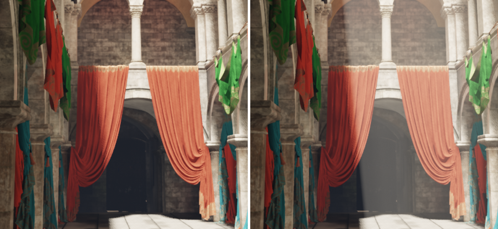

HDR pipeline
Exposure and auto exposure, ACES tone mapping, sRGB.
Engine systems / PRISMA
Post-processing and atmosphere
HDR, exposure and tone mapping, bloom, DoF, motion blur, TAA, colour grading and screen-space atmosphere with quality profiles.
in development since Nov 18, 2026

Exposure and auto exposure, ACES tone mapping, sRGB.
Bloom, depth of field, motion blur, TAA, tilt shift, sun shafts.
Colour grading, LUTs and presets: cinematic, vivid, noir, retro and more.
Post-process volumes with parameter blending.
A pass graph, a resource pool and quality profiles.
Volumetric fog banks and ground mist.
Stage 15.
Stage 27.
Stage 57.
Other systems